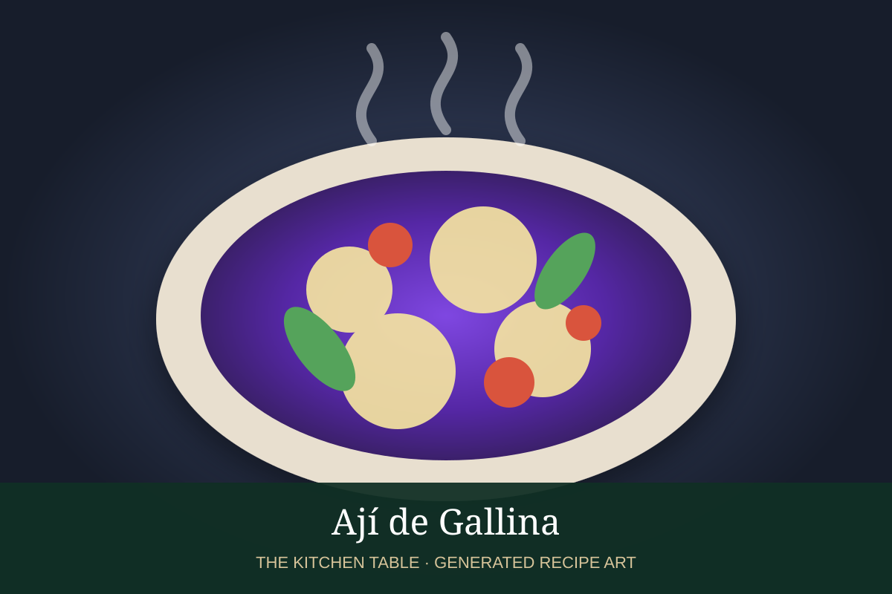

← Back to all recipes
CHICKEN · PERUVIAN
Ají de Gallina
Shredded chicken in a creamy ají amarillo sauce thickened with bread, milk, nuts, and cheese, served with potatoes and rice.
1 hrServes 6

Photo: Peruvian Food
Ingredients
- 2 lb boneless chicken breasts or thighs
- 4 cups chicken stock
- 4 slices white bread, crusts removed
- 1 cup evaporated milk
- 1 large onion, finely chopped
- 3 garlic cloves, minced
- 3 tbsp ají amarillo paste
- 1/3 cup walnuts or pecans
- 1/3 cup grated Parmesan
- 2 tbsp neutral oil
- Salt and black pepper
- Boiled yellow potatoes
- Cooked white rice
- Hard-boiled eggs and black olives, for garnish
Preparation
- Poach chicken gently in stock until cooked through. Cool and shred; reserve the stock.
- Soak bread in evaporated milk, then blend with nuts until smooth.
- Cook onion in oil until soft. Add garlic and ají amarillo paste and cook 2 minutes.
- Stir in the bread mixture and enough reserved stock to make a thick sauce.
- Add shredded chicken and Parmesan and simmer gently until creamy and cohesive.
- Season and serve over boiled potatoes with rice, egg, and black olives.